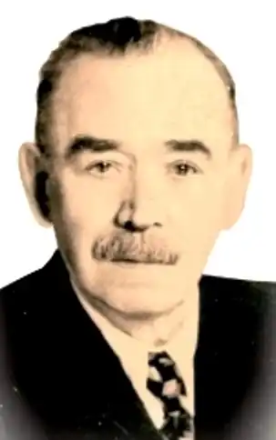

Макогон Дмитро
(1881 – 1961)
Досить відомий свого часу поет і прозаїк, публіцист, громадський діяч і педагог Дмитро Макогон відігравав певну роль у розвитку української літератури на Буковині в перші десятиріччя ХХ століття. Своїм талантом і працею, самовідданістю і жертовністю він наближав відновлення незалежності України, обстоював право українців на вільне життя, закликаючи: В тяжку, безсонячну годину, в хвилі ворожих навал, – любіть, кохайте Україну, як свій найкращий ідеал. Народився Дмитро Якович Макогон 28 жовтня 1881 року в місті Хоросткові на Тернопільщині в бідній селянській родині. Початкову освіту хлопець здобув у народній школі, потім вступив до Тернопільської гімназії, де брав участь у студентському гуртку. Через це та через зв'язок із радикально-селянським рухом Дмитра Макогона було виключено із сьомого класу гімназії як "неблагонадійного". Тому юнак змушений був шукати роботу. Він переїздить у Заліщики, де 1902 року в учительській семінарії складає екстерном іспит на право вчителювати. 1 вересня 1903 року Дмитро Макогон отримує призначення на посаду вчителя народної школи у селі Чорнівка (тепер Новоселицького району Чернівецької області), пізніше вчителює в ряді буковинських сіл. У 1914 році він був мобілізований до австрійського війська й перебував на італійському фронті аж до розпаду Австро-Угорської імперії у 1918 році. Після закінчення війни він повертається до роботи в школі. Але за часів окупації Буковини румунами умови праці стали нестерпними, адже здійснювалася румунізація українських шкіл. У 1920 році Дмитро Макогон отримав призначення на вчительську посаду в селі Веренчанці. З ним переїхала сюди його дочка Дарина, яка згодом стане письменницею Іриною Вільде. Незважаючи на переслідування й заборони Дмитро Макогон розгортає активну літературну й громадську діяльність. Він стає одним з авторів літературно-громадського місячника "Промінь" (1921– 1923), навколо якого гуртувались кращі письменницькі сили Буковини, докладає чимало зусиль для відновлення друкованого органу вчительства Буковини альманаху "Каменярі" (1921–1922), заснував сатиричний журнал "Щипавка" (1922), виступає з гострою політичною сатирою на королівську олігархію Румунії. За письменником встановили нагляд, щоб уникнути ув’язнення він емігрує до Галичини, що на той час перебувала під владою Польщі. Проте умови життя мало чим змінилися. Польські власті в Галичині також вдалися до заборони української мови та української школи. Дмитро Макогон деякий час був безробітним. У повоєнний час письменник вчителює в Станіславі (нині Івано-Франківськ), пише твори, бере участь у громадському житті краю. Помер Дмитро Якович Макогон на 80-десятому році життя 14 жовтня 1961 року в місті Івано-Франківськ, де й похований. Літературну діяльність Дмитро Макогон почав 1900 року, твори друкував під псевдонімами Макогоненко, Іван Галайда, Хоростківський, М. Коко та інші. Починаючи від 1907 року він виступає з низкою поезій, нарисів, оповідань, новел на сторінках буковинських періодичних видань "Громадянин", "Каменярі", "Іскра" та інші. У 1907 році з під пера поета виходить збірка під іронічною назвою "Мужицькі ідилії", в якій поет змальовує життя селянина та робітника, які весь свій вік важко працюють, живуть у злиднях і горі. А потім були вірші: "До боротьби" (1909), Співакові" (1910), "В тяжку годину", (1910) які сповнені громадського змісту. З часом у поетичному доробку Дмитра Макогона все більше місця посідає сатира. Він стає активним співробітником сатиричних журналів "Зеркало" (1907–1908) та "Жало" (1913–1914). Значно більшу вартість мають прозові твори Дмитра Макогона – новели із життя селян та інтелігенції, сатиричні оповідання, спрямовані проти порядків у австрійській імперії. Його оповідання друкувалися в періодичній пресі Буковини, Галичини, Канади, вийшли чотирма окремими збірками. Особливістю кращих оповідань Дмитра Макогона є їх стислість, динамічність. Автор уміє поєднати відтворення драматично натруджені, навіть трагічні моменти із сатиричними. Мова прозових творів наближена до літературної з домішками місцевих діалектів. Деякі свої твори автор справедливо називає нарисами, бо в них описується один момент, одна риса, один штрих до великої картини, яку письменник міг би створити, але, на жаль, не створив. Основну тему прозових творів Дмитра Макогона визначила його учительська професія. Це збірки "Шкільні образки" (1911), та "Учительські гаразди" (1911). В яких показано важке становлення сільської школи, гірку долю бідняцьких дітей, тернистий шлях учителя. Після Першої світової війни письменник пише ряд оповідань про становище школи та учителів за часів румунської та польської окупацій. Це твори: "Розбиті мрії", "Марійка" (1921–1922), "Перемога", "Надгробна промова" (1938). Новели Дмитра Макогона з селянського життя сповнені драматизму, трагізму, що ріднить їх із новелами Василя Стефаника. Розповідаючи про життя української школи, автор показує не лише переслідування її з боку пануючої влади, а й сатирично висміює діячів, що здатні лише виголошувати гучні "патріотичні" промови, спекулюючи на національних почуттях трудящих. З приходом на західні землі України радянської влади Дмитро Макогон віддається педагогічній праці, але зрідка пише твори про школу, звертається до гострої зброї сатири. Під кінець життя готує до видання свої "Вибрані оповідання", що вишли друком у Львові 1959 року з передмовою Олекси Романця. Значний пласт творчості нашого земляка сучасним читачам донині невідомий і до кінця не досліджений. Це, перш за все, його стрілецька поезія. У 1965 році у канадському видавництві вийшов збірник під назвою "Гей, там на горі Січ іде": пропам’ятна книга "Січей", яку зібрав і упорядкував Петро Трильовський. Це видання не одноразово перевидавалось в Україні, в ньому знаходимо ряд пісень на слова Дмитра Макогона. Це: "Гей! У "Січ !" Вступаймо у "Січ", "Гей, молодь вкраїнська!…", "Ой, ходила дівчинонька бережком…", "Стань, стань, стань, дівчино, ти…".